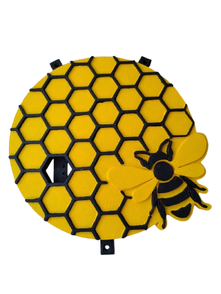
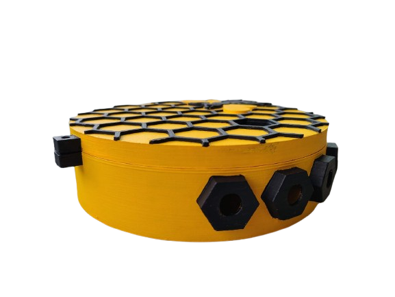
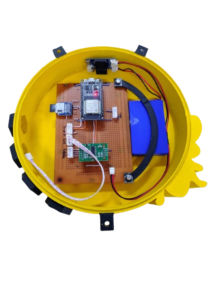
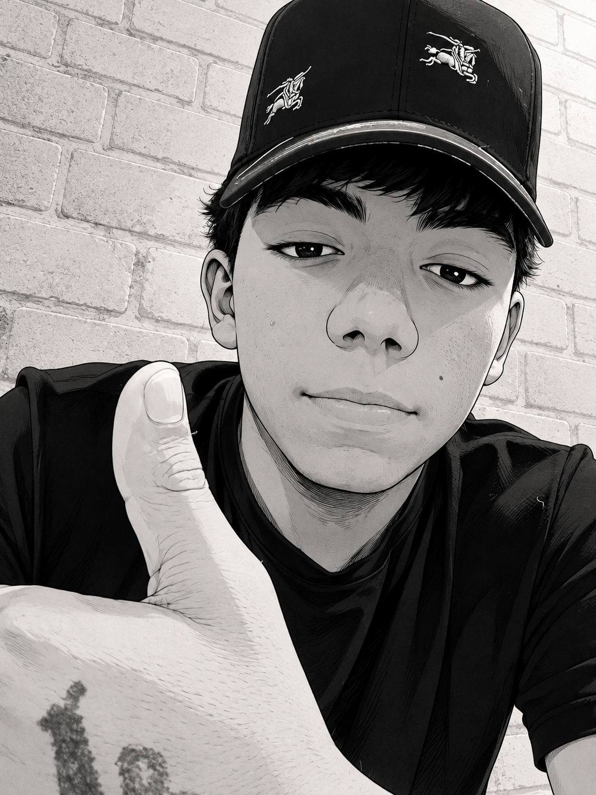

04pendiente
Ensamblaje y pruebas de hardware
Construcción del prototipo: PCB de prototipado, encapsulado IP65, alimentación con panel solar y batería LiPo. Calibración de sensores y pruebas de estrés térmico y de alcance WiFi.
BeeStation registra temperatura, humedad, peso y sonido dentro de la colmena en tiempo real, para que un apicultor sepa cómo está su colonia sin tener que abrirla.

Cuatro variables bioclimáticas críticas, capturadas en tiempo real, para evaluar la salud y productividad de la colonia.
Desde el sensor hasta el dashboard: adquisición, transmisión y visualización en la nube.
Tres vistas de la carcasa hexagonal impresa en 3D y su integración de hardware. Clic para ampliar.


Revisión de literatura sobre apicultura de precisión e IoT aplicado al monitoreo de colmenas. Encuesta a 568 apicultores de la región para identificar problemas prioritarios y validar la necesidad del sistema.
Arquitectura hardware-software, selección de sensores, microcontrolador y plataforma cloud. Diagramas de conexión, esquemas eléctricos y presupuesto.
Programación del ESP32 en C++: lectura multi-sensor, filtrado de señal, reconexión WiFi robusta, empaquetado JSON y envío a ThingSpeak. Watchdog timer, deep sleep y actualizaciones OTA.
Construcción del prototipo: PCB de prototipado, encapsulado IP65, alimentación con panel solar y batería LiPo. Calibración de sensores y pruebas de estrés térmico y de alcance WiFi.
Canales ThingSpeak con 8 campos de datos, visualizaciones MATLAB, alertas vía ThingHTTP y TimeControl. Dashboard web responsivo con histórico, exportación CSV y notificaciones push.
Instalación piloto en colmenas reales. Recolección de datos durante 90 días mínimos, correlación con registros manuales y ajuste de umbrales de alerta.
Análisis estadístico, evaluación de impacto, informe final y artículo técnico. Presentación ante el SENA y socialización con la comunidad apícola regional.
Justificación, objetivos, alcance, metodología y cronograma de actividades.
Abrir documentoRevisión bibliográfica sobre apicultura de precisión, IoT en agricultura y biología de Apis mellifera.
Abrir documentoAnálisis estadístico de apicultores de la región: distribución, hallazgos y conclusiones de diseño.
Ver formularioDiagramas hardware-software, esquemáticos de conexión y especificaciones de cada componente.
Ver diagramaGuía para instalar el hardware, configurar el entorno y cargar el firmware al ESP32.
Ver repositorioInterpretación del dashboard, comprensión de alertas y mantenimiento preventivo.
Ver repositorioLecturas y hallazgos que fundamentan las decisiones técnicas del proyecto.
Base conceptual del sistema: conectividad, sensores, comportamiento bioclimático de Apis mellifera y justificación técnica del ESP32.
Abrir documento técnicoRevisión de referencias académicas y comparación de tecnologías para ubicar este prototipo dentro de las tendencias de apicultura inteligente.
Abrir documento técnicoContribuciones bienvenidas — revisa la guía en el README antes de abrir un pull request.

En memoria
2009 — 2026
Un compañero de este proyecto. Se le recuerda con cariño.